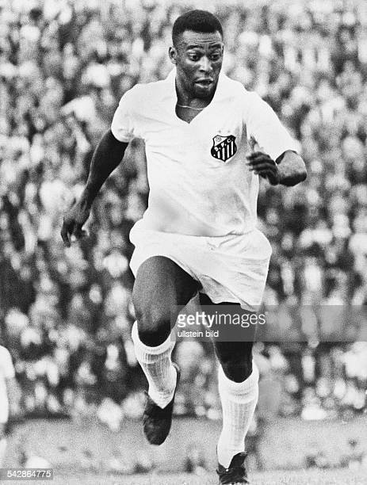

Edson Arantes do Nascimento(Pelé)
national treasure and a worldwide phenomenon

Pele's life history and achievement:
- 1940 - Pelé was born Edson Arantes do Nascimento
- 1956 - de Brito took Pelé to Santos, an industrial and port city located near São Paulo, to try out for professional club Santos FC, telling the directors at Santos that the 15-yea r-old would be "the greatest football player in the world.
- 1957 - Pelé was given a starting place in the first team and, at the age of 16, became the top scorer in the league.
- 1958 - World Cup that Pelé began wearing a jersey with the number 10. The event was the result of disorganization:
- 1962 - World Cup started, Pelé was the best-rated player in the world.[
"Peke's life and achievement in football has made the soccer game an interesting sport in the history Sports" -- Web developers from Microverse
If you have time, you should read more about one of the best footballer that ever lived
Wikipedia entry.